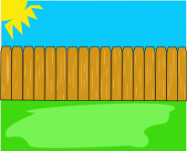

Sign Up and Schedule
I'll come by to pick up the doody
Enjoy your clean yard!
- Dog Waste Removal
- One Time, Once a Week, or Twice a Week I'll come by to pick up your dog's waste or clean an event space
- Litter Box Exchange Program
- Once a Week I will pick up your dirty full litterboxes, and replace them with clean boxes filled with clean litter
- Large Animal Waste Relocation
- I'll come out to your pasture and clean up the manure. Must provide waste dump site
- Yard De-Odorizing
- I'll spray my organic and safe Yard DeOdorizing Solution over affected areas of your lawn, leaving it smelling fresh
- Off-Site Waste Disposal
- By default I'll leave the waste bagged up in your street bin. If this doesn't work for you, I'll haul it off and throw it in my compost.
- Leaf Raking
- In order for me to thoroughly search your yard for pet waste, your yard should be relatively clear of leaves. If necessary, I can rake up your yard and remove the leaves for you.
- We've all taken a walk through our lawn only to promptly step in an unseen pile dog doody. Sign Up with me fear no more!
- It's bad for your grass! Manure might be a great fertilizer, but due to their high-protein diet, dog waste is very high in nitrogren content, which kills grass!
- Dog poop can harbor several diseases and parasites (e.g. hookworm, tapeworm), harmful to you and your pets.
- It Stinks! Even though you may only smell it when your near it, with their increased sense of smell, your dogs are constantly breathing it in.
- You wouldn't like poop in your play area, and neither do your dogs! Like us, they don't want to worry about stepping in their waste!
- You can own your yard again! I've seen friends and family let crap pile up so bad their hesitant to even go in their backyard. Enjoy your yard, call us!